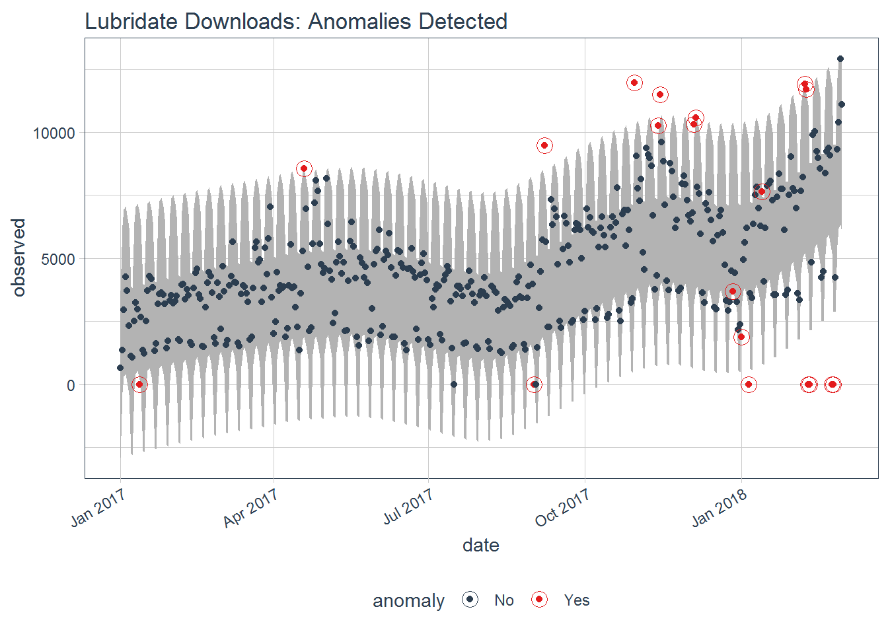

6. Abnomaly detection trong times series¶
Khi phân tích dữ liệu chuỗi thời gian, một trong các ứng dụng rất quan trọng là xác định được các quan sát bất thường. Các quan sát này có thể thể hiện sự thay đổi xu hướng hoặc có các hoạt động rủi ro bất thường.
Để xác định các quan sát bất thường trong chuỗi thời gian, ta có thể sử
dụng packages anomalize và tibbletime. Các bước để phân tích
abnomaly như sau:
- Convert dataframe sang
tibbletime, để index với dạngdate - Phân rã các thành phần trong time series thành
trend,seaonalvàremaindervới hàmtime_decompose() - Xác định các quan sát ngoại lai với hàm
anomalize() - Xác định các khoảng quan sát bất thường với
time_recompose()
library(tidyverse)
library(anomalize)
library(tibbletime)
Dữ liệu mẫu
data("tidyverse_cran_downloads")
class(tidyverse_cran_downloads)
## [1] "grouped_tbl_time" "tbl_time" "grouped_df"
## [4] "tbl_df" "tbl" "data.frame"
tidyverse_cran_downloads %>% head
## # A time tibble: 6 x 3
## # Index: date
## # Groups: package [1]
## date count package
## <date> <dbl> <chr>
## 1 2017-01-01 873 tidyr
## 2 2017-01-02 1840 tidyr
## 3 2017-01-03 2495 tidyr
## 4 2017-01-04 2906 tidyr
## 5 2017-01-05 2847 tidyr
## 6 2017-01-06 2756 tidyr
Với ví dụ này, dữ liệu đã ở dạng tibble time và có thể sử dụng
anomalize. Tuy nhiên, trong các trường hợp dữ liệu đang ở dạng data
frame, ta cần làm như sau
data %>%
group_by(group_var) %>% # Group var
arrange(date) %>% # Sắp xếp thời gian từ thấp đến cao
as_tbl_time(index = date)
6.1. Phân tách các thành phần chuỗi thời gian¶
tidyverse_cran_downloads %>%
time_decompose(count, method = "stl", frequency = "auto", trend = "auto")
## # A time tibble: 6,375 x 6
## # Index: date
## # Groups: package [15]
## package date observed season trend remainder
## <chr> <date> <dbl> <dbl> <dbl> <dbl>
## 1 tidyr 2017-01-01 873 -2761. 5053. -1418.
## 2 tidyr 2017-01-02 1840 901. 5047. -4108.
## 3 tidyr 2017-01-03 2495 1460. 5041. -4006.
## 4 tidyr 2017-01-04 2906 1430. 5035. -3559.
## 5 tidyr 2017-01-05 2847 1239. 5029. -3421.
## 6 tidyr 2017-01-06 2756 367. 5024. -2635.
## 7 tidyr 2017-01-07 1439 -2635. 5018. -944.
## 8 tidyr 2017-01-08 1556 -2761. 5012. -695.
## 9 tidyr 2017-01-09 3678 901. 5006. -2229.
## 10 tidyr 2017-01-10 7086 1460. 5000. 626.
## # ... with 6,365 more rows
6.2. Xác định abnomalize¶
Để xác định các quan sát bất thường, ta dùng hàm anomalize:
methood = "iqr": Sử dụng Inter Quantile Range để xác định quan sát bất thườngmax_anoms = 0.2: Tham số xác định tỷ lệ phần trăm quan sát có thể là quan sát bất thường
tidyverse_cran_downloads %>%
time_decompose(count, method = "stl", frequency = "auto", trend = "auto") %>%
anomalize(remainder, method = "iqr", alpha = 0.05, max_anoms = 0.2)
## # A time tibble: 6,375 x 9
## # Index: date
## # Groups: package [15]
## package date observed season trend remainder remainder_l1
## <chr> <date> <dbl> <dbl> <dbl> <dbl> <dbl>
## 1 tidyr 2017-01-01 873 -2761. 5053. -1418. -3748.
## 2 tidyr 2017-01-02 1840 901. 5047. -4108. -3748.
## 3 tidyr 2017-01-03 2495 1460. 5041. -4006. -3748.
## 4 tidyr 2017-01-04 2906 1430. 5035. -3559. -3748.
## 5 tidyr 2017-01-05 2847 1239. 5029. -3421. -3748.
## 6 tidyr 2017-01-06 2756 367. 5024. -2635. -3748.
## 7 tidyr 2017-01-07 1439 -2635. 5018. -944. -3748.
## 8 tidyr 2017-01-08 1556 -2761. 5012. -695. -3748.
## 9 tidyr 2017-01-09 3678 901. 5006. -2229. -3748.
## 10 tidyr 2017-01-10 7086 1460. 5000. 626. -3748.
## # ... with 6,365 more rows, and 2 more variables: remainder_l2 <dbl>,
## # anomaly <chr>
Phân tách các quan sát bất thường trong chuỗi thời gian.
tidyverse_cran_downloads %>%
# Select a single time series
filter(package == "lubridate") %>%
ungroup() %>%
# Anomalize
time_decompose(count, method = "stl", frequency = "auto", trend = "auto") %>%
anomalize(remainder, method = "iqr", alpha = 0.05, max_anoms = 0.2) %>%
# Plot Anomaly Decomposition
plot_anomaly_decomposition() +
ggtitle("Lubridate Downloads: Anomaly Decomposition")

6.3. Xác định vùng quan sát bất thường¶
tidyverse_cran_downloads %>%
# Select single time series
filter(package == "lubridate") %>%
ungroup() %>%
# Anomalize
time_decompose(count, method = "stl", frequency = "auto", trend = "auto") %>%
anomalize(remainder, method = "iqr", alpha = 0.05, max_anoms = 0.2) %>%
time_recompose() %>%
# Plot Anomaly Decomposition
plot_anomalies(time_recomposed = TRUE) +
ggtitle("Lubridate Downloads: Anomalies Detected")
